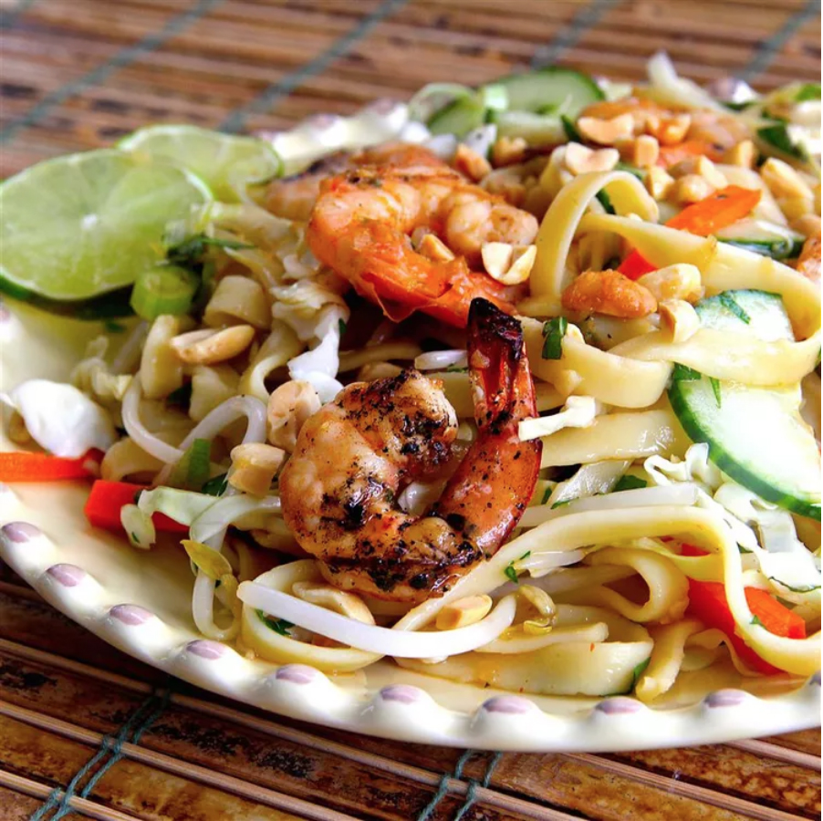

This Vietnamese-style noodle salad is my 'too hot to cook' staple. It is bursting with flavor and makes great use of leftover grilled meat or shrimp.
Step 1
Whisk water, lime juice, fish sauce,
brown sugar, garlic, ginger, and Sriracha
together in a bowl until the sugar is dissolved.
Step 2
Bring a large pot of water to a
full boil; remove from heat and soak rice noodles in the
hot water for 1 minute. Stir to separate the noodles and
continue soaking until the noodles are tender, about 3
minutes more. Drain noodles and rinse with cold water
until cooled. Shake noodles in colander to drain as much
water as possible.
Step 3
Mix noodles, cabbage, carrots,
shrimp, bean sprouts, cucumber slices, green onions, mint,
cilantro, and basil together in a large bowl. Drizzle the
dressing over the salad and toss to coat. Top with chopped
peanuts.
Dressing can be made ahead and refrigerated for up to 5 days.
You can use sambal oelek chile pepper sauce or red pepper flakes
in place of Sriracha, if that better fits your tastes.
Any leftover grilled meat works well in this salad: shrimp,
pork, or chicken are all great options.
The salad is very flexible;
try adding julienned red or yellow pepper, pea pods, baby bok choy,
or substitute sliced romaine lettuce for the cabbage.
| 450 | 10g | 71g | 20g |
| Calories | Fat | Carbs | Protein |